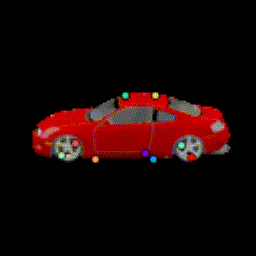

Chairs
Test chairs from ShapeNet. This is a frame-by-frame keypoint prediction on each animation frame. No temporal information is used.

Planes
Test planes from ShapeNet. Notice failure cases in the bottom row where the orientation network fails to predict the correct orientation of a few planes with very unusual wing shapes.

Cars
Test cars from ShapeNet. Notice failure cases on the bottom row: The second car is mostly black which is the same as the background. The third car looks very symmetric that the predicted orientation is sometimes reversed.

Keypoint prediction from different views
A result with more viewing variation. This is frame-by-frame prediction with no temporal constraints.
